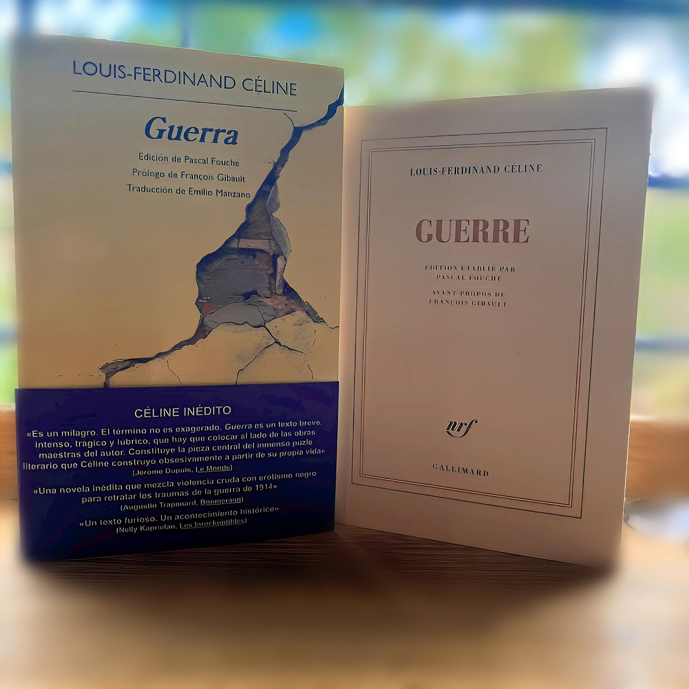

LA VIDA INMENSA
Reseña hecha por Libros Del Pobre Mundo | Mar 27, 2023 | Reseñas
Para algunos el gran suceso literario de las últimas décadas; para otros, un incipiente negocio editorial de millones de euros. Lo cierto es que el hallazgo de las seis mil hojas manuscritas de Louis Ferdinand Destouches (Courbevoie 1894- Meudon 1961), conocido como...